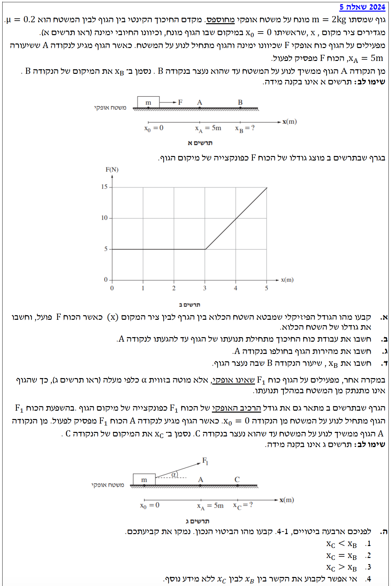

פתרון מלא - שאלה 5
פיזיקה / מכניקה 2024 / שאלה 5
ניתוח תנועה, גרף כוח משתנה ומשפט עבודה-אנרגיה במודל מודרך צעד-אחר-צעד
עודכן:
--- --:--:--
מבט כללי על השאלה
ברוכים הבאים לפתרון המלא! בשאלה זו אנו עוסקים בדינמיקה, עבודה ואנרגיה.
אנו מנתחים תנועה של גוף על משטח עם חיכוך תחת השפעת כוח משתנה ולאחר מכן בוחנים מצב בו כיוון הכוח משתנה. בשאלות מסוג זה הכלי החזק ביותר הוא לרוב קשרים של עבודה ואנרגיה המאפשרים לנו לדלג על מציאת תאוצה משתנה.
נפתור יחד שלב אחר שלב באופן ברור ומסודר, תוך הבנת התהליכים הפיזיקליים שמאחורי המשוואות.

[תמונת השאלה המקורית]
לא נמצאה תמונה בשם question-image.png באותה תיקייה.
מה נתון: גרף המתאר את הגודל של הכוח האופקי \(F\) כפונקציה של מיקום הגוף \(x\). הגוף מתחיל ממנוחה במיקום \(x_0 = 0\). הכוח פועל עד לנקודה A שבה \(x_A = 5\text{ m}\).
מה מחפשים: לקבוע מהו הגודל הפיזיקלי המיוצג על ידי השטח הכלוא בין הגרף לבין ציר המקום (\(x\)), וכן לחשב את הגודל של שטח זה.
נוסחאות ועקרונות בשימוש:
\( W = \int_{x_1}^{x_2} F_x(x) dx \)
השטח הכלוא מתחת לגרף של כוח כפונקציה של מקום מתאר את העבודה שעושה אותו כוח. משמעות האינטגרל מבחינה גרפית היא חישוב השטח הכלוא מתחת לגרף.
חישוב שטח מתחת לגרף:
השטח המדובר מורכב משני חלקים גאומטריים פשוטים: מלבן (בין \(x=0\) ל- \(x=3\)) וטרפז (בין \(x=3\) ל- \(x=5\)). נחשב את השטח הכולל:
\[ W_F = S_{\text{rectangle}} + S_{\text{trapezoid}} \]
\[ W_F = (3 - 0) \cdot 5 + \frac{5 + 15}{2} \cdot (5 - 3) \]
\[ W_F = 15 + \frac{20}{2} \cdot 2 = 15 + 20 \]
\[ W_F = 35 \text{ J} \]
מסקנה: הגודל הפיזיקלי הוא עבודת הכוח \(F\). גודל השטח הוא: \(W_F = 35 \text{ J}\)
הערת מורה:
שימו לב לא להתבלבל! בקינמטיקה למדנו שהשטח מתחת לגרף מהירות-זמן (\(v-t\)) שווה להעתק (\(\Delta x\)). כאן מדובר בגרף כוח-מקום (\(F-x\)), והשטח בו מייצג אנרגיה שהושקעה בגוף - קרי, עבודה. תמיד כדאי לבדוק את היחידות של הצירים: \(\text{Newton} \cdot \text{meter} = \text{Joule}\).
מה נתון: מסת הגוף היא \(m = 2 \text{ kg}\). מקדם החיכוך הקינטי הוא \(\mu_k = 0.2\). תאוצת הכובד \(g = 10 \text{ m/s}^2\). הגוף נע מ-\(x=0\) ועד \(x=5\text{ m}\).
מה מחפשים: את עבודת כוח החיכוך הקינטי מתחילת תנועתו של הגוף ועד הגעתו לנקודה A.
נוסחאות ועקרונות בשימוש:
\( \Sigma F_y = 0 \)
\( f_k = \mu_k N \)
\( W = F \cdot \Delta x \cdot \cos\theta \)
פתרון צעד-אחר-צעד:
שלב 1: מציאת הכוח הנורמלי (N)
נבחר ציר אנכי (y) חיובי כלפי מעלה. נרשום את משוואת הכוחות בציר האנכי (שבו אין תנועה ולכן אין תאוצה):
\[ \Sigma F_y = m \cdot a_y \]
\[ N - mg = 0 \implies N = m \cdot g = 2 \cdot 10 = 20 \text{ N} \]
שלב 2: מציאת החיכוך וחישוב עבודתו
כעת נחשב את גודל כוח החיכוך הקינטי, ואת עבודתו בהתחשב בכך שהוא פועל נגד כיוון התנועה (זווית \(180^\circ\)):
\[ f_k = \mu_k \cdot N = 0.2 \cdot 20 = 4 \text{ N} \]
\[ W_{f_k} = f_k \cdot \Delta x \cdot \cos(180^\circ) \]
\[ W_{f_k} = 4 \cdot 5 \cdot (-1) = -20 \text{ J} \]
מסקנה: עבודת כוח החיכוך היא: \(W_{f_k} = -20 \text{ J}\)
הערת מורה:
זכרו: כוח החיכוך הקינטי תמיד עושה עבודה שלילית כי הוא תמיד מנוגד לכיוון ההעתק של הגוף (\(\cos 180^\circ = -1\)). משמעות העבודה השלילית היא שחיכוך "לוקח" אנרגיה מכנית מהגוף (אנרגיה זו הופכת ברובה לחום).
מה נתון: הגוף מתחיל ממנוחה \(v_0 = 0\). העבודות שחישבנו: \(W_F = 35 \text{ J}\), \(W_{f_k} = -20 \text{ J}\).
מה מחפשים: את מהירות הגוף בעת חלפו בנקודה A (\(v_A\)).
נוסחאות ועקרונות בשימוש:
\( \Sigma W = \Delta E_k \)
\( E_k = \frac{1}{2}mv^2 \)
שימוש במשפט עבודה ואנרגיה:
הכוחות האנכיים (כבידה ונורמל) מאונכים לכיוון התנועה ולכן אינם מבצעים עבודה. נחשב את סך העבודה הכוללת מ-0 ל-A ונשווה לשינוי באנרגיה הקינטית:
\[ W_{\text{total}} = W_F + W_{f_k} = 35 + (-20) = 15 \text{ J} \]
\[ W_{\text{total}} = E_{kA} - E_{k0} \]
\[ 15 = \frac{1}{2} m v_A^2 - \frac{1}{2} m v_0^2 \]
נציב את הנתונים המספריים ונחלץ את המהירות:
\[ 15 = \frac{1}{2} \cdot 2 \cdot v_A^2 - 0 \]
\[ 15 = v_A^2 \]
\[ v_A = \sqrt{15} \approx 3.87 \text{ m/s} \]
מסקנה: מהירות הגוף בנקודה A היא: \(v_A \approx 3.87 \text{ m/s}\)
הערת מורה:
משפט עבודה ואנרגיה הוא מעין "קסם" של הפיזיקה! במקום להשתמש בחוק השני של ניוטון כדי למצוא תאוצה (שבמקרה שלנו משתנה, כי הכוח \(F\) משתנה בין \(x=3\) ל-\(x=5\)) ואז להשתמש במשוואות קינמטיקה מורכבות, המשפט מדלג ישירות מהכוחות והמרחק היישר אל המהירות!
מה נתון: מנקודה A (\(x_A = 5 \text{ m}\)) הכוח \(F\) מפסיק לפעול. הגוף ממשיך לנוע עד עצירה בנקודה B (\(v_B = 0\)).
מה מחפשים: את שיעור המקום \(x_B\) שבו הגוף נעצר.
נוסחאות ועקרונות בשימוש:
\( \Sigma W = \Delta E_k \)
חישוב מרחק העצירה:
בקטע מ-A ל-B, הכוח האופקי היחיד שפועל הוא כוח החיכוך (\(f_k = 4 \text{ N}\)). כוח החיכוך עושה עבודה על ההעתק \(\Delta x_{AB} = x_B - 5\).
\[ W_{A \to B} = -f_k \cdot (x_B - x_A) = -4 \cdot (x_B - 5) \]
\[ \Delta E_k = E_{kB} - E_{kA} = 0 - 15 = -15 \text{ J} \]
נשווה בין העבודה לשינוי באנרגיה הקינטית:
\[ -4 \cdot (x_B - 5) = -15 \]
\[ x_B - 5 = \frac{-15}{-4} = 3.75 \]
\[ x_B = 3.75 + 5 = 8.75 \text{ m} \]
מסקנה: הגוף ייעצר בנקודה: \(x_B = 8.75 \text{ m}\)
הערת מורה:
ניתן היה לפתור סעיף זה גם בראייה רחבה יותר (מההתחלה ועד הסוף). סך האנרגיה שהכניס כוח \(F\) שווה ל-\(35 \text{ J}\). כדי שהגוף ייעצר, עבודת החיכוך הכוללת צריכה "לאכול" את כל האנרגיה הזו, כלומר \(-f_k \cdot x_B = -35\). נקבל \(-4 \cdot x_B = -35 \implies x_B = 8.75 \text{ m}\). שתי הדרכים מובילות לאותה תוצאה!
מה נתון: כעת הכוח המושך \(F_1\) פועל בזווית \(\alpha\) כלפי מעלה. הגרף נותן את הרכיב האופקי \(F_{1x}\) שהוא זהה למצב הקודם. הגוף לא מתנתק ונעצר בנקודה C (\(x_C\)).
מה מחפשים: לקבוע מהו הביטוי הנכון לקשר שבין \(x_C\) ל- \(x_B\), ולנמק קביעה זו.
נוסחאות ועקרונות בשימוש:
\( \Sigma F_y = 0 \)
\( f_k = \mu_k N \)
נימוק שלבי:
שלב 1: התנועה עד נקודה A (הכוח הנורמלי משתנה)
בקטע מ-\(x=0\) עד נקודה A (\(x=5\)), הכוח \(F_1\) פועל. העבודה של הרכיב האופקי נשארה \(35 \text{ J}\). עם זאת, לכוח \(F_1\) יש רכיב אנכי המושך מעלה (\(F_{1y}\)). ניתוח הכוחות בציר האנכי מראה שהכוח הנורמלי קטן יותר:
\[ \Sigma F_y = 0 \implies N' + F_{1y} - mg = 0 \implies N' = mg - F_{1y} \]
כיוון ש-\(N' < N\), גם כוח החיכוך בקטע זה קטן יותר (\(f'_k < f_k\)). מכאן נובע שעבודת החיכוך המעכבת עד נקודה A (בערכה המוחלט) קטנה יותר בהשוואה לסעיף הקודם. כפועל יוצא, האנרגיה הקינטית של הגוף כשהוא מגיע לנקודה A גדולה יותר ממה שהייתה קודם (\(E'_{k,A} > 15 \text{ J}\)).
שלב 2: התנועה מנקודה A ועד העצירה (הנורמל חוזר לקדמותו)
שימו לב: החל מנקודה A, הכוח \(F_1\) מפסיק לפעול! לכן, הכוח הנורמלי חוזר להיות שווה בדיוק ל-\(mg\), וכוח החיכוך חוזר לערכו המקורי (\(f_k = 4 \text{ N}\)).
כדי לעצור את הגוף, על כוח החיכוך ה"רגיל" לבצע עבודה (שלילית) שתאפס לחלוטין את האנרגיה הקינטית שלו מנקודה A. מכיוון שהגוף הגיע לנקודה A עם יותר אנרגיה קינטית, כוח החיכוך הקבוע יצטרך לפעול לאורך מרחק גדול יותר כדי לבלום אותו לחלוטין.
\[ \Delta x_{\text{stop}} = \frac{E'_{k,A}}{f_k} > \frac{E_{k,A}}{f_k} \]
מסקנה: הגוף ייעצר רחוק יותר. הביטוי הנכון הוא מספר 3, ולכן מתקיים: \(x_C > x_B\)
הערת מורה:
נקודה קריטית למחשבה! המלכודת כאן היא לחשוב שהחיכוך מוקטן לכל אורך הדרך. הכוח המושך באלכסון פועל רק עד נקודה A, ולכן הנורמל והחיכוך קטנים רק שם! היתרון האמיתי שהגוף צבר הוא בכך שהוא "נכנס" לקטע העצירה (אחרי נקודה A) עם מהירות גבוהה יותר (יותר אנרגיה קינטית). מנקודה זו ואילך, הוא חווה את אותו חיכוך בדיוק כמו בסעיפים הקודמים, אך בגלל עודף האנרגיה - הוא יגלוש למרחק רב יותר.